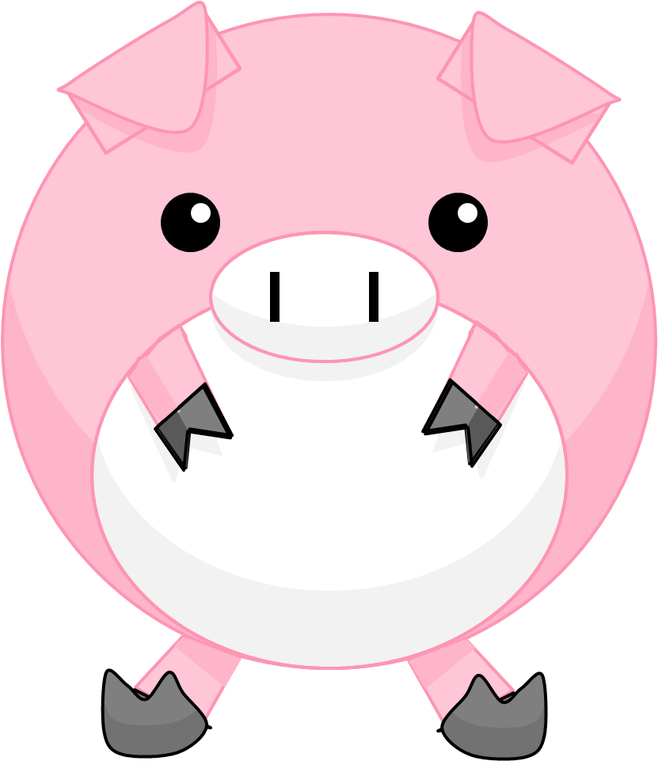

Happy❊
Little Pink Pigs are juice pigs, meaning that they store juice within them. Little Pink Pigs like to say "Aink!"
New Pig

| Made By | Bright Starts |
| Time Bought | Near August 2013? |
| Bought From | Buy Buy Baby |
| Country made in | China |
| Time Made | Unknown |
| Made of | Polyester |
| Size (LxWxH) | 4.5in x 4.5inx4.5in |
| Favorite Food | Yummy Little Pig |
| Favorite Color | Pink #FEC6F6 |
| Favorite Sports | Bouncing |
| Weight | About 0.3lb |
| Type | Depends |
| Good or Evil | Good |
New Pig is a 4.5in x 4.5in x 4.5in Bright Starts Pretty in Pink Pull and Play Pig. New pig was made in China and is made out of polyester. New Pig has batteries and vibrates when her tail is pulled. New Pig is Big Pig's favorite food. New Pig is a hyperpiggy. New Pig likes to eat diamonds, pigs, fish, potatoes, and corn. New Pig is pink and has a blue-green colored bow. New Pig has blue eyes and has a tail with a bow. New Pig has heart and dot patterns on her ears and legs. New Pig likes to sleep on a bed.
New Pig sometimes wants to eat Big Pig, and she likes to play with Little Pink Sister and Little Pink Pig!

New Pig was the fourth Little Pink Pig to be bought! New Pig has traveled to many fun places such as parks, movie theaters, and restaurants! New Pig also likes to watch fireworks!
Little Pink Pig

| Made By | Bright Starts |
| Time Bought | Near 2011 |
| Bought From | Target |
| Country made in | China |
| Time Made | Unknown |
| Made of | Polyester |
| Size (LxWxH) | 4.5in x 4.5in x 4.5in |
| Favorite Food | Yummy Little Pig |
| Favorite Color | Pink #FFE0EF |
| Favorite Sports | Climbing Trees |
| Weight | About 0.3lb |
| Type | Soft |
| Good or Evil | Good |
Little Pink Pig is the mother of Little Pink Sister and the grandmother of New Pig. Little Pink Pig likes to climb trees and is always crying! Little Pink Pig's left ear is broken.
Little Pink Pig has been to many places and likes to play! Little Pink Pig is the oldest little pink pig. Little Pink Pig likes to play battle piggy card games with the other pigs! Since Little Pink Pig is a soft pig, she always loses!
Little Pink Pig is a teacher at piggy school! She teaches math and cooking! Little Pink Pig always likes to cook yummy foods for the other little pink pigs!
Little Pink Little Pig Sister
| Made By | Bright Starts |
| Time Bought | 2012 or 2013 |
| Bought From | Target |
| Country made in | China |
| Time Made | Unknown |
| Made of | Polyester |
| Size (LxWxH) | 4.5in x 4.5in x 4.5in |
| Favorite Food | Yummy Little Pig |
| Favorite Color | Pink #FFC3E9 |
| Favorite Sports | Hiking |
| Weight | About 0.3lb |
| Type | Soft |
| Good or Evil | Good |
Little Pink Little Pig Sister's short name is Little Pink Sister. Little Pink Sister is the child of Little Pink Pig and the sister of Little Pink Brother. Her child is New Pig. Little Pink Sister's right ear is broken.
Like Little Pink Pig, Little Pink Sister has visited many places and likes to play games. Little Pink Sister's favorite activities are bouncing and hiking on mountains! Little Pink Sister likes to view different types of buildings! Little Pink Sister also likes to ride on boats and go to the park.
Little Pink Sister currently attends Piggy School. Her favorite subject is maths! When she is not at school or playing with her family, she likes to sleep in a tent or on the couch.
Little Pink Brother
| Made By | Bright Starts |
| Time Bought | 2012 or 2013 |
| Bought From | Target |
| Country made in | China |
| Time Made | Unknown |
| Made of | Polyester |
| Size (LxWxH) | 4.5in x 4.5in x 4.5in |
| Favorite Food | Potatoes |
| Favorite Color | Aqua #9CFFF8 |
| Favorite Sports | Hiding |
| Weight | About 0.3lb |
| Type | Soft |
| Good or Evil | Good |
Little Pink Brother is the brother of Little Pink Sister. The two pigs were bought at the same time. Little Pink Brother was isolated from the other pigs during one time.
Little Pink Brother is the newest-looking of all the Little Pink Pigs. He likes to stay at home, and he sometimes likes to go inside his house made of wood blocks. Little Pink Brother's favorite foods are vegetables, unlike most little pink pigs, who like to eat pigs. Little Pink Brother mostly likes to read in quiet places, but he sometimes also plays with the other pigs.
Sometime around 2013 or 2014, Little Pink Brother started hiding in a cabinet! The other little pink pigs couldn't find him, so they assumed that he went to Piglen for fun. Little Pink Brother stayed there for a few years before finally being found by Giant Pig in 2019. The outside world had changed a lot since he first started hiding!
Created in 2016